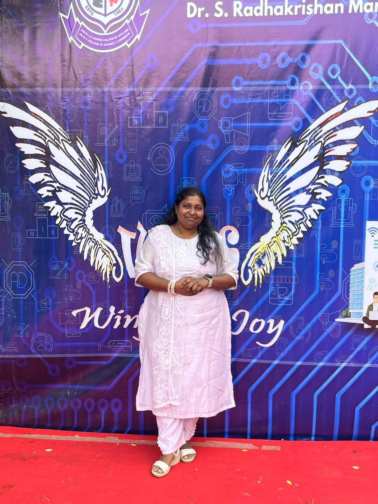

JYOTI MA'AM
A chapter we wish could stay open forever. Seven years of gentle guidance, countless shared smiles, and an irreplaceable presence that made our department feel like home. With all our love, from your CS students.
Seven years of teaching. A lifetime of impact — some journeys end on a calendar, but your warmth never will — where guidance, gentle laughter, and unwavering faith in us became the heartbeat of our college days.
On 29 June 2019, you stepped into our department as a Professor. Back then, none of us could have known how deeply your presence would touch our lives or how much poorer our college years would have been without you.
What followed was never just seven years of syllabi, lectures and deadlines. It was seven years of someone who genuinely cared. Someone who noticed when we were overwhelmed before exams, who stayed back patiently to explain a difficult concept until we smiled with confidence, and who celebrated our smallest achievements as if they were her own.
You were there when we doubted our abilities, offering encouragement that lifted our spirits without ever making us feel small. You brought warmth into cold lecture halls and turned ordinary departmental routines into memories filled with comfort and laughter.
And now, as 31 October 2026 marks the closing of your daily presence here, our hearts ache to let you go. The college calendar may close this chapter, but what you gave us — your kindness, your patience, your faith in us — will live on in every single path we take forward.
I. The Lessons That Remain
For the infinite patience with which you answered every doubt, the encouragement that made tough subjects feel conquerable, and the quiet lessons in grace and humility that no syllabus could ever print.
II. The Faith You Gave Us
For standing in our corner when self-doubt was loud. For believing in what we could achieve before we could see it ourselves, and giving us the courage to stand tall and proud.
III. The Warmth We Will Miss
For the comfort of knocking on your door just to talk, the spontaneous laughter between classes, and making us feel that behind every professor's desk was someone who truly loved watching us grow.
“We came to college hoping to earn degrees. We leave with tears in our eyes, knowing we found a mentor and a friend we can never replace.”
EVERY CELEBRATION CARRIED A PIECE OF YOUR HEART
The Soul of Our Department — If our hearts could describe you in four words...
Long after the lectures are over, we will always remember the way you made us feel: valued, protected, and truly believed in.

Some Things Cannot Be Deleted — Not Even With Ctrl + Z
“Your lessons are permanently stored in our memory. Your kindness has no expiration date. Your impact is an infinite loop of gratitude that time cannot break.”
“We will miss your footsteps in the corridor, your reassuring nod before nervous presentations, and the gentle reminder that no mistake was ever the end of the road.”
“One day, when we look back across decades, these ordinary college days with you will be our most treasured memories. Time gave us seven years; our hearts will keep you for a lifetime.”
A digital farewell letter written on behalf of the Computer Science Department.
FAQ
Will we forget you, Ma'am?
Never. How could we forget someone who listened when everyone else was in a rush? Who gave us faith when our hands shook with doubt? You didn't just teach in our classrooms—you gently helped shape the people we are becoming. You are woven into our stories forever.
Will the department feel the same without you?
The desks will remain, timetables will be put up, and lectures will begin on time. But the department will carry a quiet, tender emptiness that no timetable can fill. Your warm smile and the comfort of knowing you were around cannot be replaced by anyone.
What will we miss the most?
The everyday little moments that we took for granted. Knocking on your cabin door just to say hello, hearing your laughter down the corridor, your gentle ‘Don’t worry, you did great,’ and the reassurance of knowing we always had someone in our corner.
Is this really goodbye?
It is goodbye to seeing you each morning and asking for your advice before exams. But it will never be goodbye to our love, respect, and prayers for you. Some bonds are etched deeper than distance and time.
What do our hearts wish for you?
Every blessing, peace, and deep joy this life can offer. May your next chapter be filled with gentle mornings, genuine appreciation, and wonderful people who cherish your golden heart just as much as we do.
What will remain after 31 October 2026?
A legacy of pure kindness. The confidence you gave to hesitant students, the happiness from events you brought to life, and the immense, enduring love of an entire department that will forever love and honor your name.